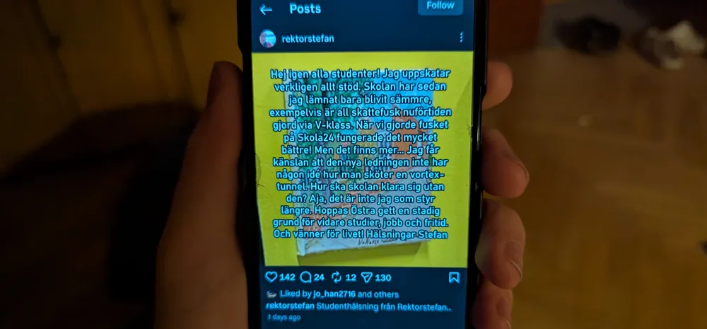

Östra gymnasiet

Nytt Stefan-upplägg förargar elever
Stefan Vilkman, Östras gamla rektor, har fått en till våg av stöd av Östras elever efter att han lagt upp ett nytt inlägg på sin Instagram-konto. I det nya inlägget förklarar den gamla rektorn att skattefusket skolan håller på med inte alls håller upp till den nivå som skolan bör sträva efter. Det här faller i linje med den allmänna uppfattningen av elever på skolan om att skolan bara blivit sämre sedan den nya rektorn trädde till makten. "Skattefusk är någonting där Östra verkligen borde kunna skina på, men jag tror att ledningen saboterar skattefusket medvetet för att ge eleverna sämre mat", säger en elev.
Men Vilkman slutar inte bara vid anklagelser om sämre skattefusk, han påstår även att skolans vortex-tunnel till mörker-relmen nu är mer instabil än någonsin. "Jag får känslan att den nya ledningen inte har någon idé hur man sköter en vortex-tunnel", skriver Vilkman i sitt inlägg. Vortex-tunneln, som har funnits där sedan skolan grundades, agerar som portal till en alternativ-dimension där monster och vidunder lurkar. Nu, påstår Vilkman, finns det risk att portalen kollapsar och därmed inte längre kan föra färska demoner in i skolans elevers hjärnor. "Hur ska jag kunna vakna skrikande mitt på natten utan mina demoner? Helt oacceptabelt!", avslutar eleven.
Skolans ledning gav ingen kommentar.